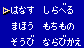

二つの月に導かれし者たちよ、
冒険の扉は、いま開かれた。
ダブルムーン。
二つの月を持つこの世界を、人はいつしかそう呼んだ。
ラディス海峡を狭む二つの大陸、そしてそこで暮らす人々。
剣と魔法にあやつられるその運命。
はじまりは、アレスという名の小さな村。
神父に育てられた15歳の少年の、壮大なる冒険が、
今はじまろうとしている。
このたびはファミリーコンピュータ用ゲームカセット「ダブルムーン伝説」をお 買い上げいただきまして、誠にありがとうございました。あなたがこのダブルムーン の世界を冒険するとき、このマニュアルが必ずあなたの助けとなるでしょう。真の勇 者となるための、いわばバイブルです。よく読んで、冒険への道しるべとしてくださ い。
剣と魔法の世界ダブルムーン。
二つの月があることから、
いつしか人々はこの世界のことをこう呼んだ。
このダブルムーンには、
ラディス海峡をはさんで二つの大陸がある。
そこには様々な村や町があり、
その一つであるアレスという小さな村から
この物語は始まる。
少年が15歳になったその日、
育ての親である神父が
少年の生い立ちを語り始める。
そして、少年の冒険が始まった。
一刻も早くダブルムーンの世界へと、気持ちはもう冒険にむけて奮い立っている ことでしょう。まずはその前に冒険の基本となるコントローラーの使い方を覚えましょ う。
いよいよゲームの始まりです!まずカセットを差込み電源を入れるとダブルムーン のオープニング画面になります。ここでスタートボタンを押すとメニュー画面に切り 替わります。初めてゲームをする場合は「はじめる」、前回セーブしたところから始 める場合は「つづける」を選んでください。
このコマンドを選択すると名前登録画面になります。これがダブルムーンを冒険 する主人公です。あなたの好きな名前をつけてください。十字ボタンで文字を選択し、 Aボタンで入力します。(名前は6文字までです。)
つぎに、主人公の職業を決めます。主人公の選べる職業は3種類でそれぞれ能力が 違いますので、しっかりと考えて選んでください。
「つづける」を選択すると、いままで冒険してセーブをした場所から冒険を始め ることができます。2つのデータが表示されますので、自分の冒険のデータを選んで 下さい。データは2つまでしか記録できません。さらに新しい冒険をする場合は「け す」でどちらかのデータを消してから初めて下さい。
現在の状態をカセット内に記録することができます。記録できるデータは2つで宿 屋に泊まると自動的にその場所にセーブされます。セーブすると以前のデータが消え てしまうので、セーブするときはくれぐれも慎重に。
このダブルムーンの世界には、主人公のほかに様々な職業の人々がいて主人公の 手助けをしてくれます。その職業の種類を紹介しましょう。

さて、これから冒険にでかけるわけですが、ただ歩いているだけで物語が進むわ けがありません。いろいろな場所で人と会話し、イベントをクリアーして行かなけれ ばならないのです。では、キャラクターの行動であるコマンドについて説明しましょ う。
キャラクターはそれぞれ人によって能力が違います。それを表わしたのがステー タスです。
フィールドやダンジョンを移動中に、敵と遭遇すると戦闘画面に切り替わります。 戦闘コマンドが表示されますので、それぞれのキャラクターの行動をコマンドから選 択してください。コマンドの種類は以下の通りです。
キャラクターはまれにその職業にあった特技を使うことがあります。特技の種類 はそのキャラクターの職業とコマンドで決まっていて、そのコマンドを何度も使うこ とで特技を使うことができます。必ず使うわけではありませんので、戦闘は特技に頼 らず自分の力で戦いましょう。
| しょくぎょう | コマンド | こうか |
|---|---|---|
| 戦士 | たたかう | 敵全体に攻撃力2倍の攻撃をする。 |
| 聖戦士 | たたかう | 敵1人に攻撃力3倍の攻撃をする。 |
| 魔法戦士 | たたかう | 敵1人に攻撃力2倍の攻撃をする。 |
| 司祭 | まもる | パーティ全員の通常攻撃によるダメージを減らす。 |
| 治癒術師 | まもる | パーティ全員のHPを回復する。 |
| 魔術師 | となえる | 攻撃魔法のダメージを2倍にする。 |
| 神霊術師 | まもる | パーティ全員の攻撃魔法によるダメージを減らす。 |
| 武術師 | たたかう | 敵全体を攻撃する。 |
| 盗賊 | たたかう | 奇襲でダメージをあたえ相手を恐怖状態にする。 |
| 吟遊詩人 | まもる | 敵全体を混乱させる。 |
戦闘中に敵の魔法や特殊攻撃を受けると、キャラクターが特殊なダメージを受け ることがあります。
敵モンスターを全て倒すか、パーティが全滅すると戦闘は終了します。戦闘が終 了すると経験値とゴールドを得ることができます。時にはアイテムが手に入ることも あります。
ダブルムーンには主人公達が海を渡るための船があります。港のある町から別の 港へと運行していますので、それを使って海を越えることができます。また、港のな いところに行くには自分で船を手に入れなければなりません。
ダブルムーンの世界には数多くお店があり、ここでアイテムを買うことや売るこ とができます。冒険をうまく進める為には、これらのお店がポイントとなりますので うまく利用しましょう。
このダブルムーンのどこかにあるカジノ。
このカジノではコインを賭ける2種類のゲームを楽しめます。
コインをためるとアイテムと交換できます。
この冒険の目的の一つにルーンテクターを捜すということがあります。ルーンテ クターとは特殊な力をもった4つの道具で、それぞれの力は炎、大地、水、風に分類 されます。道具として使うことにより、それぞれの力を引き出すことができます。
また、その全てを装備した者は神の力を得ると言われています。
魔法は、魔法の書を買うことで覚えることができます。攻撃魔法、防御魔法、回 復魔法、その他の魔法の4種類があり、それぞれに様々な系統があります。キャラク ターによって使えるもの、使えないものがあり、MPを多く消費するものほど威力が強 力です。
| なまえ | まほうのしょ | しょうひMP | こうか | 使用できるキャラクター |
|---|---|---|---|---|
| 攻撃魔法【ファイヤー系】 | ||||
| フレイムボルト | フレボルのしょ | 4MP | 火の玉をつくりだし敵にぶつける。 | 魔法戦士・魔術師・吟遊詩人 |
| フレイムボール | フレボーのしょ | 8MP | 複数の火の玉を敵グループにぶつける。 | 魔術師・魔法戦士 |
| メテオフレイム | メテフレのしょ | 18MP | 炎の嵐で敵を一掃する。 | 魔術師 |
| 攻撃魔法【アイス系】 | ||||
| アイスアロー | アイアロのしょ | 5MP | 氷の矢が敵を襲う。 | 魔法戦士・魔術師・吟遊詩人 |
| アイスストーム | アイストのしょ | 10MP | 冷気の嵐で敵を包む。 | 魔法戦士・魔術師 |
| アイスウェーブ | アイウェのしょ | 20MP | 大気を結晶化させ敵全てを凍らせる。 | 魔術師 |
| 攻撃魔法【サンダー系】 | ||||
| サンダーボルト | サンダルのしょ | 5MP | 電撃を敵にぶつける。 | 魔法戦士・魔術師・吟遊詩人 |
| マルチボルト | マルボルのしょ | 12MP | 雷を呼び敵1グループにダメージを与える。 | 魔法戦士・魔術師 |
| マルチプラズマ | マルプラのしょ | 20MP | 大気を放電させ敵全体を攻撃する。 | 魔術師 |
| エクスプロー | エクプロのしょ | 20MP | 敵のまわりの大気を大爆発させる。 | 魔術師 |
| 攻撃魔法【マインド系】 | ||||
| ショック | ショックのしょ | 4MP | 敵の精神に強い衝撃を与え敵のMPを減少させる。 | 神霊術師・吟遊詩人 |
| フィアー | フィアーのしょ | 10MP | 敵1グループの精神に衝撃を与えMPを減少させる。 | 神霊術師 |
| インサニティ | インサニのしょ | 15MP | 敵1グループを混乱させる。 | 神霊術師・吟遊詩人 |
| スリープ | スリープのしょ | 10MP | 敵1グループを眠らせる。 | 神霊術師・吟遊詩人 |
| 攻撃魔法【アンデット系】 | ||||
| ディスペル | ディスペのしょ | 8MP | 聖なる祈りによりアンデットにダメージを与える。 | 聖戦士・司祭 |
| デストロイ | デストロのしょ | 22MP | 神聖なるエネルギーで敵全てを包む。 | 司祭 |
| 攻撃魔法【パラライズ系】 | ||||
| パラライズ | パラライのしょ | 5MP | 敵の神経を麻痺させ攻撃不能にする。 | 魔戦士・魔術師 |
| ホールド | ホールドのしょ | 13MP | 敵1グループを麻痺させる。 | 魔術師 |
| ペトリファイ | ペトリフのしょ | 15MP | 敵全てを石化させる。 | 魔術師 |
| 攻撃魔法【ポイゾン系】 | ||||
| ポイゾンアロー | ポイアロのしょ | 4MP | 敵の体内に毒を発生させダメージを与える。 | 盗賊 |
| デスクラウド | デスクラのしょ | 15MP | 毒の霧を発生させ敵全てを即死させる。 | 盗賊 |
| 攻撃魔法【バインド系】 | ||||
| バインド | バインドのしょ | 5MP | 敵を沈黙させ呪文を封じ込める。 | 司祭・神霊術師 |
| サイレンス | サイレスのしょ | 10MP | 敵1グループの呪文を封じ込める。 | 神霊術師 |
| 攻撃魔法【コール系】 | ||||
| コールウィプス | コルウィのしょ | 20MP | 雷霊「ウィプス」を召換する。 | 神霊術師 |
| コールビヤーキ | コルビヤのしょ | 20MP | 狂獣「ビヤーキ」を召換する。 | 神霊術師 |
| 防御魔法【プロテクト系】 | ||||
| アウトコールド | アウコーのしょ | 4MP | 冷気による攻撃を防ぐ。 | 聖戦士・司祭 |
| アウトフレイム | アウフレのしょ | 4MP | 炎による攻撃を防ぐ。 | 聖戦士・司祭 |
| アウトサンダー | アウサンのしょ | 4MP | 雷撃による攻撃を防ぐ。 | 聖戦士・司祭 |
| ホーリーブレス | ホリブレのしょ | 3MP | 聖なる力により味方の攻撃力をあげる。 | 魔法戦士・司祭 |
| プロテクター | プロテクのしょ | 7MP | 味方全員を硬化させ防御力をあげる。 | 司祭 |
| マインドカバー | マイカバのしょ | 5MP | 敵の精神攻撃から味方全員を守る。 | 司祭・治癒術師・神霊術師 |
| プロジェクター | プロジェのしょ | 7MP | 分身を作り敵の攻撃を防ぐ。 | 魔術師・神霊術師 |
| 回復魔法【ヒール系】 | ||||
| ヒーリング | ヒーリンのしょ | 3MP | 仲間1人のHPをすこし回復する。 | 聖戦士・司祭・治癒術師 |
| マイナーヒール | マイヒルのしょ | 7MP | 仲間1人のHPをかなり回復する。 | 聖戦士・司祭・治癒術師 |
| メジャーヒール | メジヒルのしょ | 12MP | 仲間1人のHPを完全に回復する。 | 治癒術師 |
| マルチヒール | マルヒルのしょ | 12MP | 仲間全員のHPをすこし回復する。 | 司祭・治癒術師 |
| グレートヒール | グレヒルのしょ | 20MP | 仲間全員のHPをかなり回復する。 | 治癒術師 |
| レイズデッド | レイズデのしょ | 30MP | 死んだ仲間を生き返らせる。(戦闘時以外) | 司祭 |
| レサレクション | レサレク | 30MP | 死んだ仲間を生き返らせる。(いつでも) | 治癒術師 |
| キュア | キュアのしょ | 4MP | 身体の毒を浄化したり、麻痺を治療する。 | 聖戦士・司祭・治癒術師 |
| リフレッシュ | リフレシのしょ | 8MP | 混乱した仲間を正常にし石化を治療する。 | 司祭・治癒術師 |
| オールキュア | オルキュのしょ | 10MP | 全ての状態の治療回復。 | 治癒術師 |
| その他の魔法【ワープ系】 | ||||
| ゲート | ゲートのしょ | 20MP | 町への瞬間移動の魔法。 | 全員 |
| テレポート | テレポーのしょ | 20MP | ダンジョンから地上へ脱出する。 | 司祭・魔術師・神霊術師 |
| エスケープ | エスケプのしょ | 5MP | 戦闘からの離脱。 | 盗賊・吟遊詩人 |
| その他の魔法【スペシャル系】 | ||||
| ファインド | ファインのしょ | 5MP | 隠された抜け道などを発見する。 | 盗賊・吟遊詩人 |
原作で活躍したキャラクター達も当然ゲーム中で登場します。もちろん主人公と パーティを組んで共に戦うこともできます。
町の人の話の中には重要なヒントもあります。新しい町についたら全ての人の話 を聞くようにしましょう。
戦闘で全滅したらそこで冒険が終わってしまいます。こまめにセーブするよう心 がけましょう。
戦闘コマンドの「ねらう」を使うとダメージをあまり受けずに敵を倒すことがで きます。最初のうちは面倒でも「ねらう」を使うようにしましょう。
必ず使えるわけではありませんが、全てのキャラクターはかなりの確率で特技を 使います。司祭や治癒術師などの特技も使うようにしましょう。
魔法の書が一冊あればみんなでまわし読みができます。一度使ったからといって 捨てないようにしましょう。
{kind=link}